From Concept to Clarity
From Concept to Clarity
A potentially
toxic
relationship
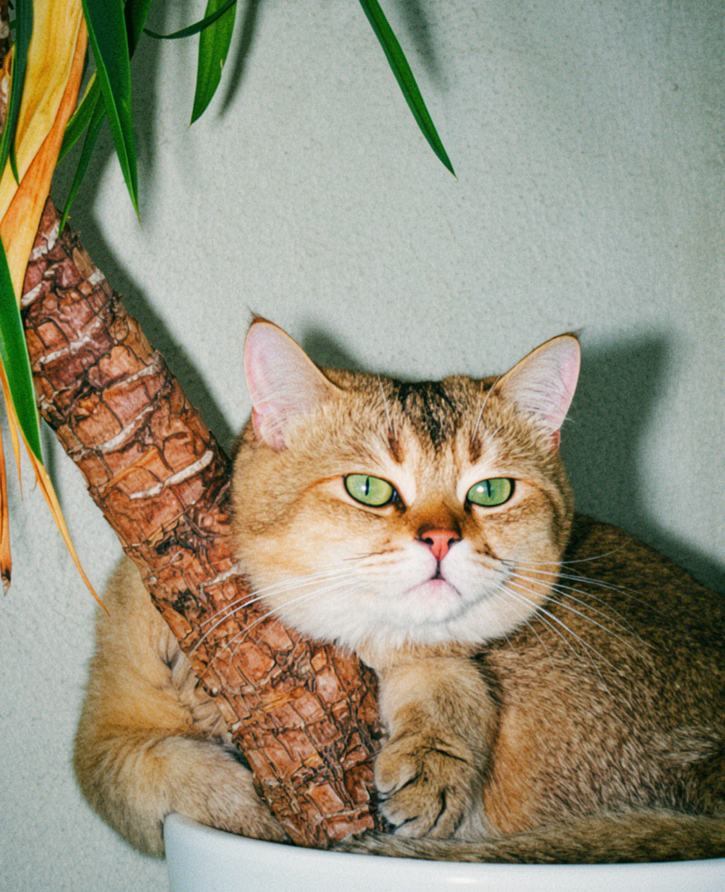
It started with Jäger, my cat, and a plant he wouldn’t leave alone.
What seemed like a harmless habit made me wonder: was this plant actually safe for him?
Meet Jäger. And his beloved Yucca elephantipes.
He started sleeping in its pot, bending the trunk a little more every week.
Snoof is what came out of that question. Twice.
02 / Origin
Where it started
Snoof began in July 2026 as a personal project. Plant apps were great at naming plants and reminding you to water them. Pet-safety information lived somewhere else and rarely explained much.
Version 1.0 was my first answer. A survey with 43 submissions, a product strategy, UX principles, a brand, and early wireframes. The idea: tell people whether a plant is a Good Match for their household.
Some instincts were already there, like “context over binary labels” and “explain uncertainty.” But the wireframes still ended in a verdict. That’s where I paused.
A few months later, during Spiced Academy’s Design OS course, I went back to it with a new method and one question: which parts of v1.0 would hold up?
-
Deepened01
43
Where it began 43 survey submissions in July 2026 gave me a first hunch. In v2.0, interviews turned it into evidence.
-
Kept02
The brand The name, identity, and tone of voice from v1.0 carried straight into v2.0.
-
Kept03
“Support decisions. Don’t diagnose.”
The core principle Written for v1.0, it still sets the rules: Snoof supports decisions and never diagnoses.
-
Changed04
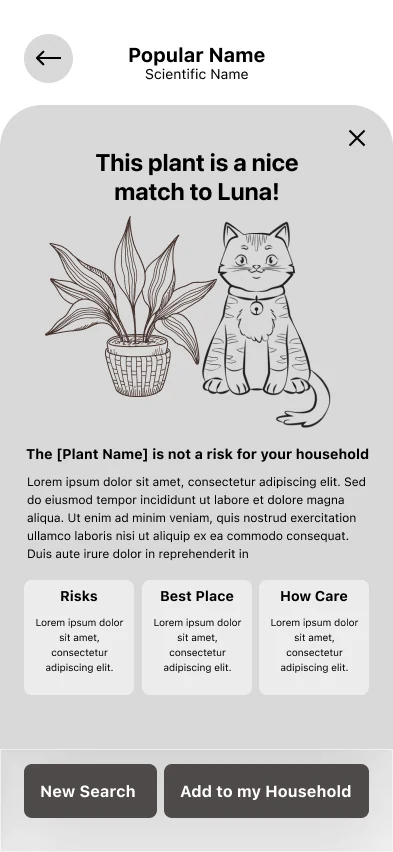
From verdicts to layers v1.0 judged a plant “a nice match.” v2.0 separates the plant, the evidence, and the pet, and checks one pet instead of a whole household.
-
v1.0 wireframe05
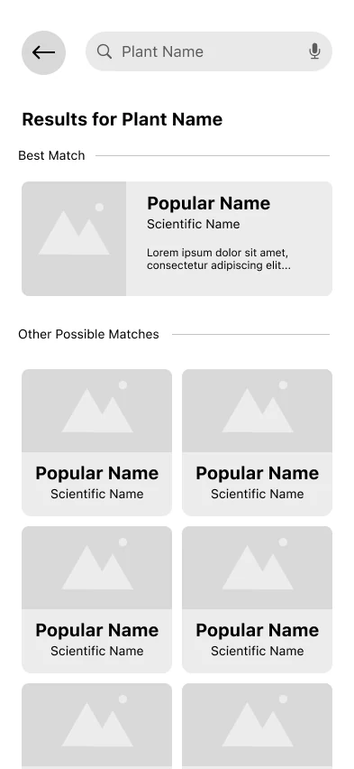
Where v1.0 stopped Low-fidelity wireframes, July 2026. Every result still ended in a verdict.
-
Dropped06
Plant care.
Safer alternatives.A narrower focus v1.0 also covered plant care and safer alternatives. v2.0 dropped both to focus on pet safety.
-
07
Paused
Then I came back Months later, with interviews instead of a survey and a structured AI-assisted workflow.
03 / Research
Turns out, it’s not that simple
I started v2.0 thinking the problem was finding out which plants are toxic. So I talked to six people who live with pets and plants. Each conversation focused on a real moment when they had wondered whether a plant was safe.
Toxic
But what does that actually mean?
01
Knowing isn’t understanding.
Some people already knew a plant was toxic and still had no idea what that meant. Would the cat get sick? How sick? One participant gave her plants away without knowing what they could actually do.
“I didn’t know what effects it could have on the cat.”
02
Same plant, different pets.
Some pets chew leaves. Others sniff, rub against the pot, nap next to it, or ignore plants entirely. And people leaned on what they’d seen their own pet do to decide how worried to be.
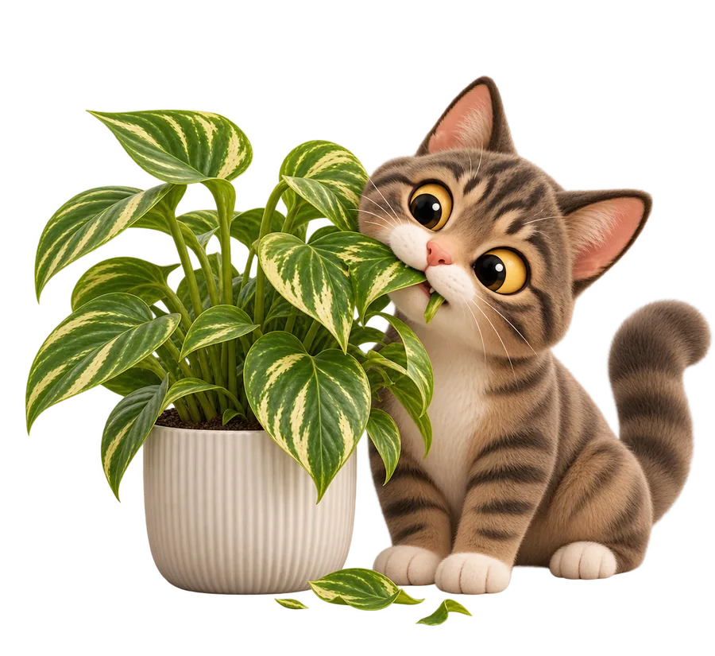
Chews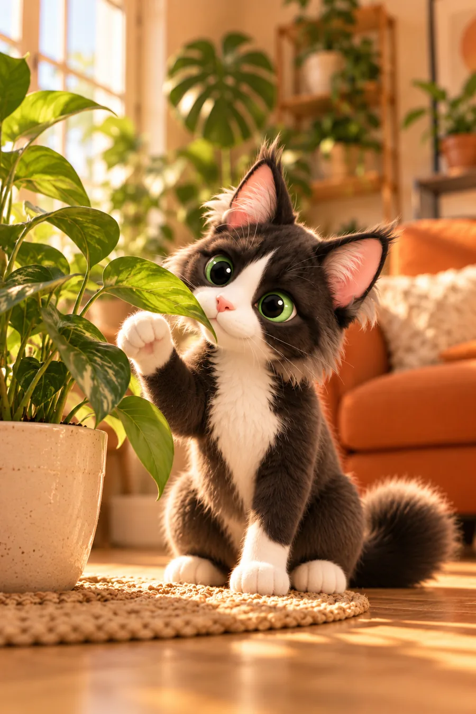
Sniffs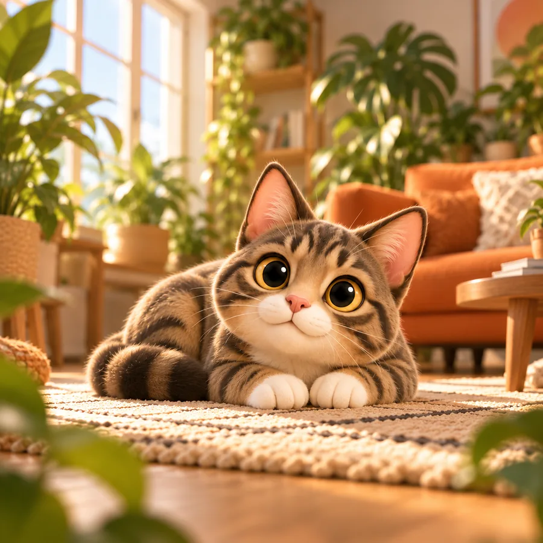
Lies nearby
The sources didn’t make things easier. I compared twelve, from animal-welfare organizations to veterinary references, and their labels and formats rarely lined up.
Six exploratory interviews. Enough to reframe the problem, not to measure how common it is.
How I worked with AI
I used Claude Code to speed up the slowest part: turning six interviews into observations, themes, and draft insights, and comparing twelve sources.
I treated every output as a draft, not a source of truth. I corrected nine of its theme interpretations, put key insights in my own words, and had 21 source claims rewritten where the wording went beyond the evidence.
04 / Problem
Defining the right problem
I wrote five possible problem statements and chose the one that held up against every framing check I’d set: people can find out that a plant is “toxic,” but not what that means for their own pet.
Getting there meant untangling three things my v1.0 wireframes had blended together.
- ToxicityWhat a plant can do. This comes from sources, not from the app.
- ExposureWhether a pet might actually come into contact with it. No app can predict that.
- BehaviorWhat an owner has seen their pet do. Useful context, nothing more.
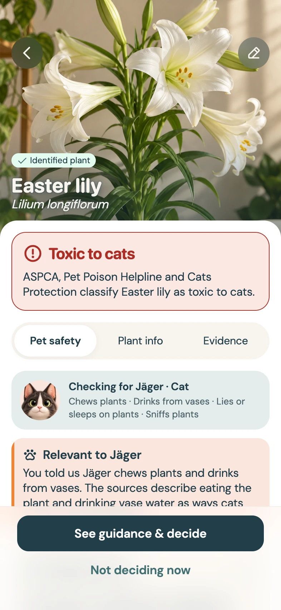
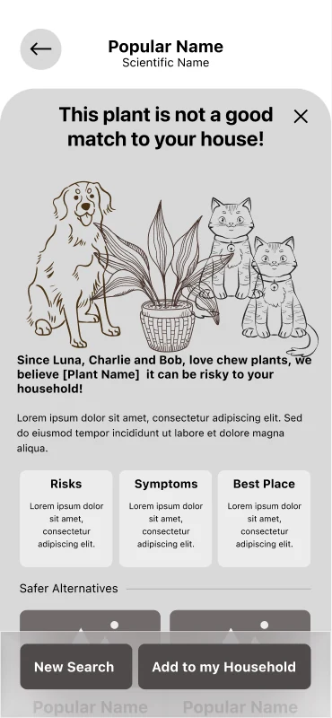
v1.0, a guess dressed up as an answer
In v1.0, a pet’s habits fed straight into a verdict.
The wireframe read: “Since Luna, Charlie and Bob love chewing plants, we believe this plant can be risky to your household.” It sounded personal.
v1.0 Behavior Verdict
v2.0, context instead of a verdict
In v2.0, a pet’s habits inform how it could be exposed, not how toxic the plant is.
Toxicity comes from the sources. Jäger chews plants and drinks from vases, so Snoof points to the sources that describe eating the plant and drinking vase water as ways cats can be exposed to lilies.
v2.0 Behavior Context
Behavior doesn’t change how toxic a plant is. It changes the questions people ask about it.
Not a scientific discovery. It’s what the interviews showed me about how people think.
05 / Decisions
Connecting the dots
I explored eleven concepts across three rounds, some generated in parallel with AI. These three taught me the most about what Snoof should not be.
-
Deciding with what is known
Help people decide even when the information runs out.
Why not My note on it was blunt: leaving people with uncertainty doesn’t solve anything, it just hides the problem.
-
Ask before I decide
Bring a veterinary team into the decision.
Why not It depended on a vet role my research hadn’t established, and added a second person to a one-person journey.
-
What my pet’s track record doesn’t cover
Challenge the “my cat never touches plants” reasoning.
Kept a piece It addressed a side pattern, not the core problem. But its pet context was worth keeping.
The direction
Reliable plant information, explained through the pet’s reported behavior.
It scored the same as a simpler concept. I chose it because it was the only one that answered the real question: what does “toxic” mean for my cat?
The simpler concept explained the plant. This one also connects what the pet does with how the plant could affect it, so people can make a better-informed decision.
What it also had to meet
- Severity comes only from sources, never from behavior.
- Works in one journey, with no second actor.
- Essential safety information stays visible when behavior is unknown.
A pet’s behavior gives context. It doesn’t predict exposure, change toxicity, or guarantee anything.
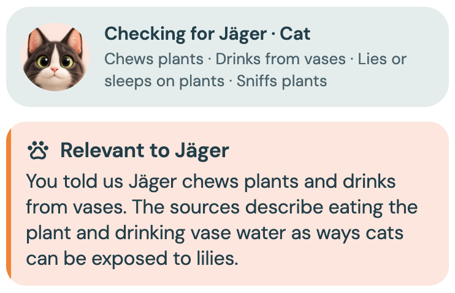
05 / Decisions, part 2
Designing for uncertainty
Then the prototype raised an awkward question. What happens when the information isn’t clear enough?
One source lists the Red shield plant as “caution advised,” without explaining what that means for cats. It would have been easy to force it into Toxic or Non-toxic, just to give people an answer.
-
v1.0 · A verdict
A pet’s habits turned into a verdict.
-
v2.0 · Toxic to cats
The finding comes from sources, not from the pet.
-
v2.0 · Not enough information
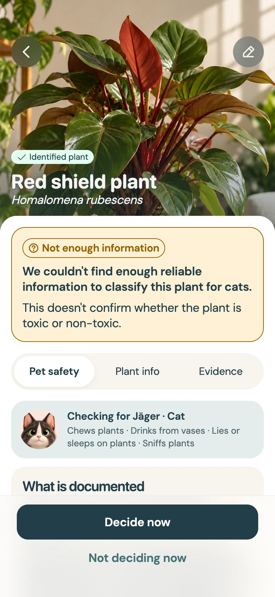
When the sources don’t say enough, Snoof says so.
So I retired the Good Match verdicts and kept three things separate.
- 1What we know about the plant, attributed to its sources
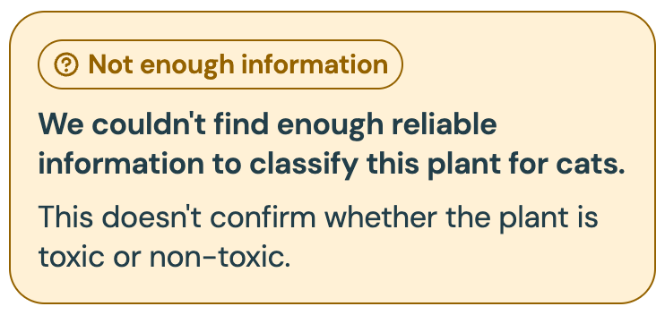
- 2How strong that evidence is
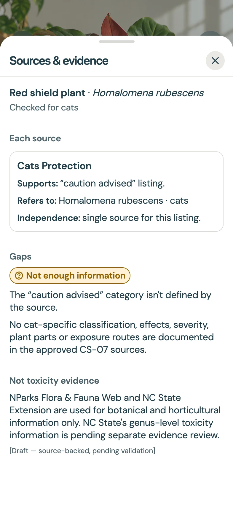
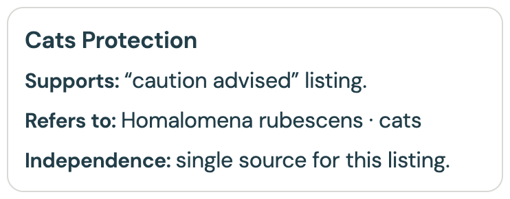
- 3What we know about the pet
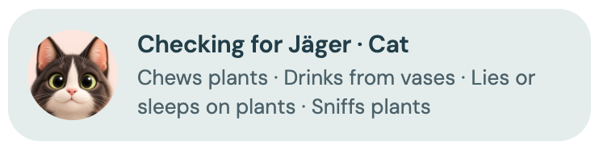
Not enough information.
It’s not an error state. It’s a designed outcome, with its own screen, its own explanation, and the same decision options as every other result. The app also never calls a plant “safe.” Non-toxic is not a guarantee.
v1.0 already had a principle called “explain uncertainty.” v2.0 is where it finally reached the interface.
How I worked with AI
AI helped me examine the content and spot where sources disagreed. The boundaries were mine: Snoof never decides which veterinary source is clinically correct, and severity always comes from the sources.
06 / Brand & UI
Meet Snoof
Snoof’s visual identity was born in v1.0, long before I revisited the project at Spiced Academy. The playful wordmark, expressive typography, warm color palette, and stylized 3D pets were already part of its personality.
The name comes from that irresistible need to sniff, investigate, and poke around. In the wordmark, the two o’s squeeze together into a small nose. It’s there to be discovered, not announced.
Made for curious pets and careful humans.
Color
- Deep Navy#223E49Contrast, stability, and trust
- Muted Teal#4E8080Calm, with a nod to nature
- Warm Cream#FEFBDFThe warm light foundation
- Soft Peach#FACEBBA soft supporting surface
- Curious Orange#F08434Energy and curiosity
- Terracotta#C24C35An expressive accent
Characters
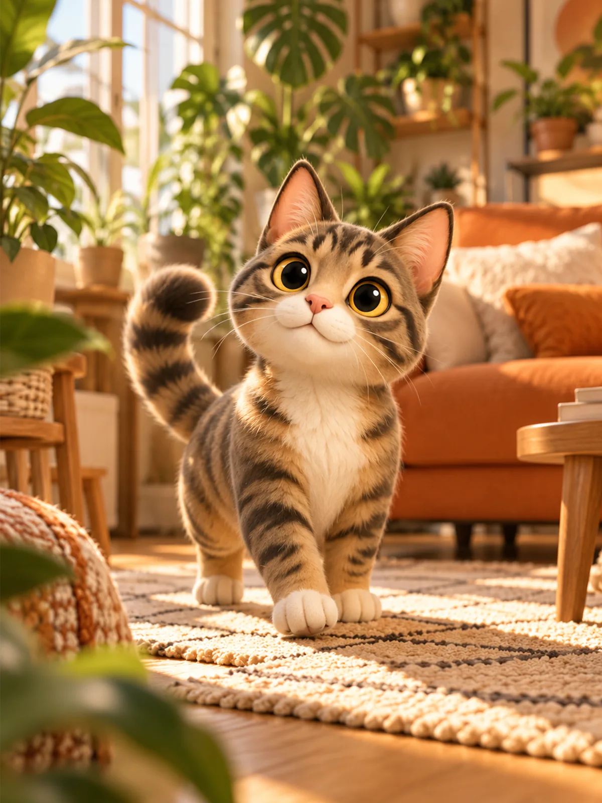
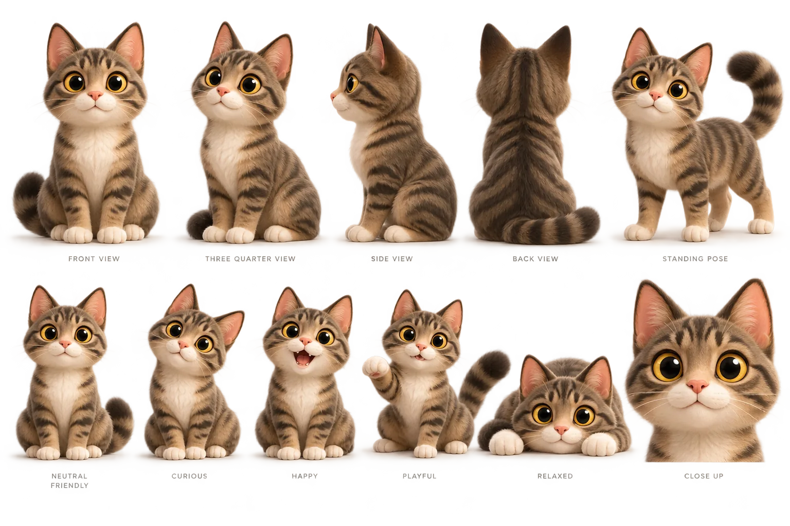
For v2.0, I kept that foundation and made small adjustments to bring it into the interface. The challenge wasn’t to redesign the brand. It was to let a playful personality sit next to serious information, through clear hierarchy, purposeful color, and a tone that knows when to stop joking.
Interface
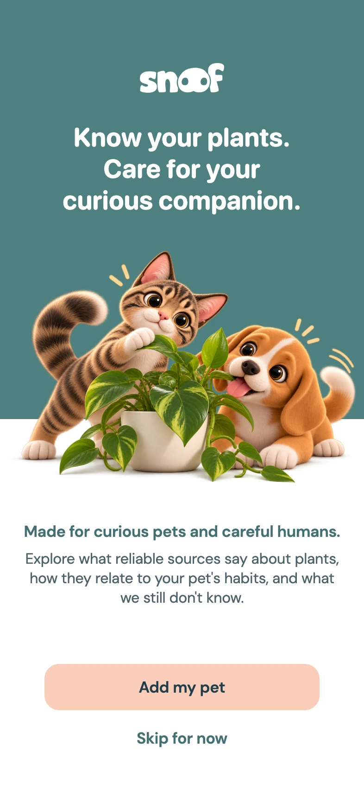
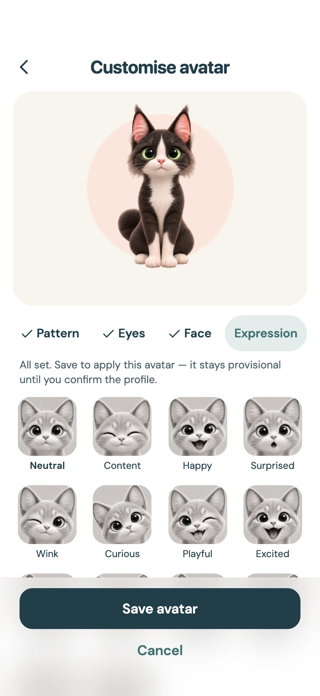
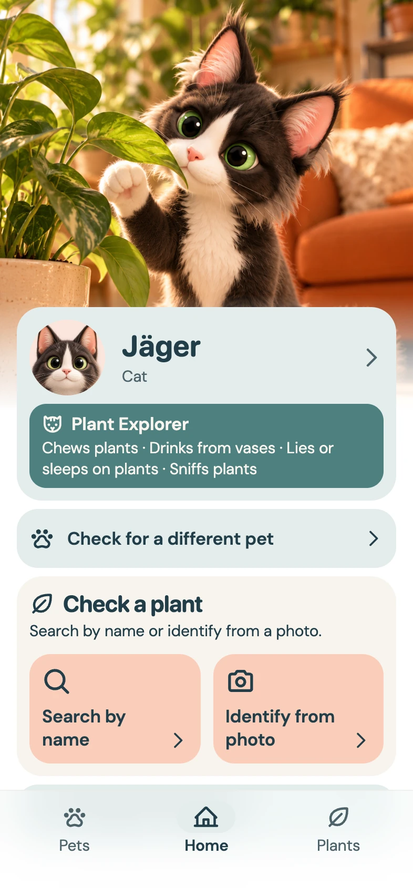
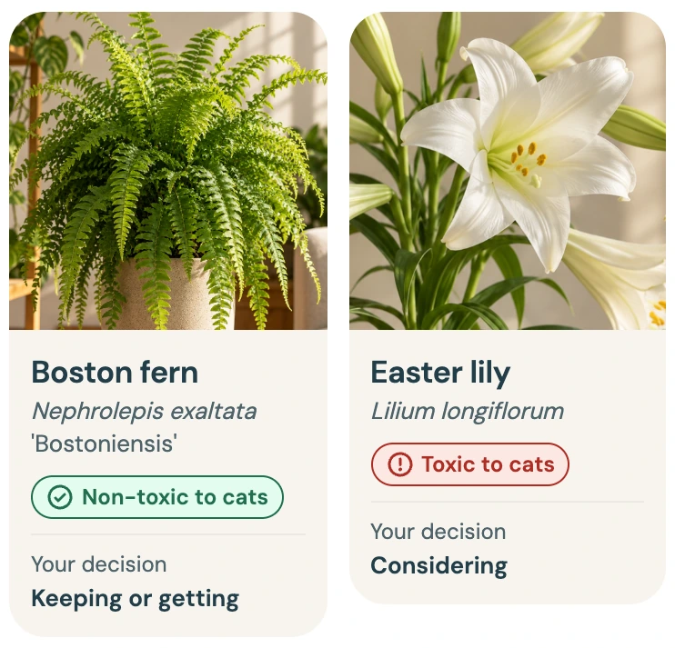
Tone of voice
The tone adapts to the moment.
At home
Warm, playful, conversational
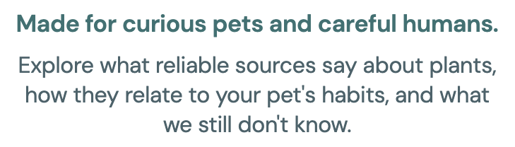
When it matters
Calm, clear, factual
The identity is the chosen direction for v2.0. Like the product, it can keep evolving.
07 / Prototype
Let’s take Snoof for a sniff
One plant, one decision.
- Set up your pet
- Search for a plant and confirm it
- See what the sources say, how strong the evidence is, and how it relates to your pet
- Decide for yourself: keep it, take a precaution, or choose another plant
- Save it and come back later
I designed the prototype in Claude Design, directing it screen by screen. It covers the full core journey across three plants: one toxic, one non-toxic, and one with not enough information. AI-run QA compared the build against my specs, and I fixed the design gaps it found myself.
It runs on sample data, and progress resets every session. Photo identification is simulated, and only three plants are fully actionable. It’s a prototype for learning, not a product.
Explore interactive prototype (opens in a new tab)08 / Next
There’s more to sniff out
Worth exploring later Ideas, not a roadmap
- Multiple pets
- Veterinary guidance
- A home-screen widget
- Pet safety beyond plants